<!DOCTYPE lake>
<h2 data-lake-id="fvAQT" id="fvAQT"><span data-lake-id="u04c3681a" id="u04c3681a">学习目标</span></h2><ul list="u62aa70bb"><li data-lake-id="u73d98288" fid="u45dde339" id="u73d98288"><span data-lake-id="udee15978" id="udee15978">学习如何配置stc8单片机的端口</span></li><li data-lake-id="uc891acb8" fid="u45dde339" id="uc891acb8"><span data-lake-id="u788db232" id="u788db232">学习如何使用C语言编写控制LED的程序</span></li><li data-lake-id="u5ce66acd" fid="u45dde339" id="u5ce66acd"><span data-lake-id="uf2199b71" id="uf2199b71">学习如何使用Keil C51编译和烧录程序</span></li><li data-lake-id="u44bcb267" fid="u45dde339" id="u44bcb267"><span data-lake-id="ue757f539" id="ue757f539">掌握项目编写流程</span></li></ul><h2 data-lake-id="QtpNK" id="QtpNK"><span data-lake-id="uba5baea6" id="uba5baea6">学习准备</span></h2><ul list="ud16efae0"><li data-lake-id="u8a722a2c" fid="ufac30d7c" id="u8a722a2c"><span data-lake-id="u47318690" id="u47318690">黑马程序员STC8核心开发板</span></li><li data-lake-id="u22a61b18" fid="ufac30d7c" id="u22a61b18"><span data-lake-id="u956e685b" id="u956e685b">C51的Keil 环境</span></li></ul><h2 data-lake-id="SQhGZ" id="SQhGZ"><span data-lake-id="uc0b6a904" id="uc0b6a904">学习内容</span></h2><h3 data-lake-id="jTKy4" id="jTKy4"><span data-lake-id="u6e2d6989" id="u6e2d6989">原理图</span></h3><p data-lake-id="ub5bff61f" id="ub5bff61f">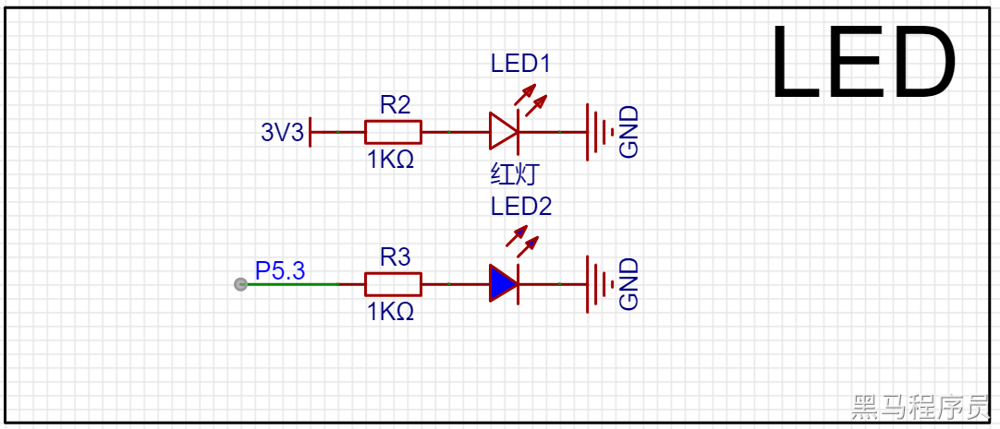</p><p data-lake-id="u60e7be86" id="u60e7be86"><span data-lake-id="u046a2621" id="u046a2621">实际图：</span></p><p data-lake-id="uff7705bf" id="uff7705bf">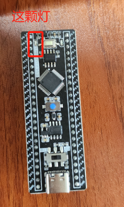</p><p data-lake-id="ue3886955" id="ue3886955"><span data-lake-id="u427cb6c8" id="u427cb6c8">通过控制 P5.3引脚输出高电平时，LED灯就点亮，输出低电平时LED灯就熄灭</span></p><h3 data-lake-id="XgTiA" id="XgTiA"><span data-lake-id="uc592160e" id="uc592160e">需求实现</span></h3><p data-lake-id="ubb1cbbfc" id="ubb1cbbfc"><span data-lake-id="ub928360d" id="ub928360d">点亮或是熄灭LED</span></p><h4 data-lake-id="Tutbv" id="Tutbv"><span data-lake-id="u64ab0f12" id="u64ab0f12">项目创建</span></h4><ol list="u450cefdb"><li data-lake-id="ucde13fca" fid="u5385487b" id="ucde13fca"><span data-lake-id="u71cce484" id="u71cce484">新建项目</span></li></ol><p data-lake-id="u45486019" id="u45486019" style="padding-left: 2em">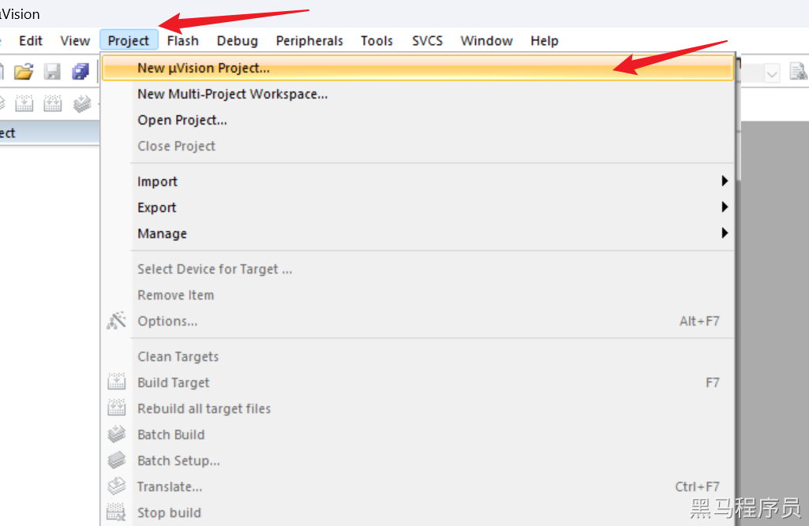</p><p data-lake-id="u029c6402" id="u029c6402" style="padding-left: 2em"><span data-lake-id="uf26c46ae" id="uf26c46ae">根据个人情况，选择合适的目录，创建项目</span></p><ol list="u96499bed" start="2"><li data-lake-id="ue44ee455" fid="u9c5ae6e5" id="ue44ee455"><span data-lake-id="u2d44dbc2" id="u2d44dbc2">配置开发板信息</span></li></ol><p data-lake-id="u63087a6c" id="u63087a6c" style="padding-left: 2em"><span data-lake-id="u6c5d5dc8" id="u6c5d5dc8">配置设备信息：</span></p><p data-lake-id="ub081c952" id="ub081c952" style="padding-left: 2em">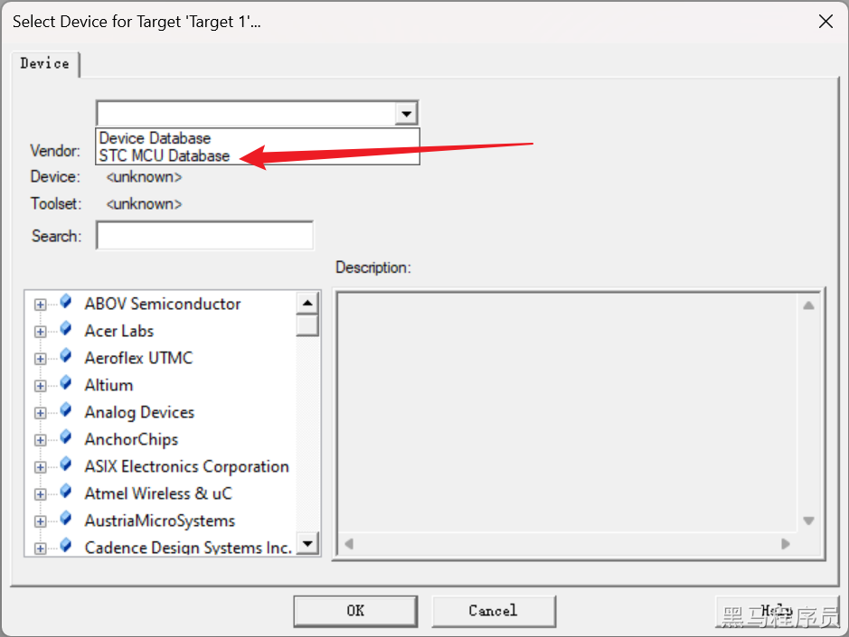</p><p data-lake-id="uc524583f" id="uc524583f" style="padding-left: 2em"><span data-lake-id="u9bf31297" id="u9bf31297">当前位STC芯片的开发板，选择</span><code data-lake-id="uf5fe0ecc" id="uf5fe0ecc"><span data-lake-id="u12be10d3" id="u12be10d3">STC MCU Database</span></code></p><p data-lake-id="u9b118f91" id="u9b118f91" style="padding-left: 2em"><span data-lake-id="uc140a2ca" id="uc140a2ca">搜素具体芯片型号，进行配置：</span></p><p data-lake-id="u0d523308" id="u0d523308" style="padding-left: 2em">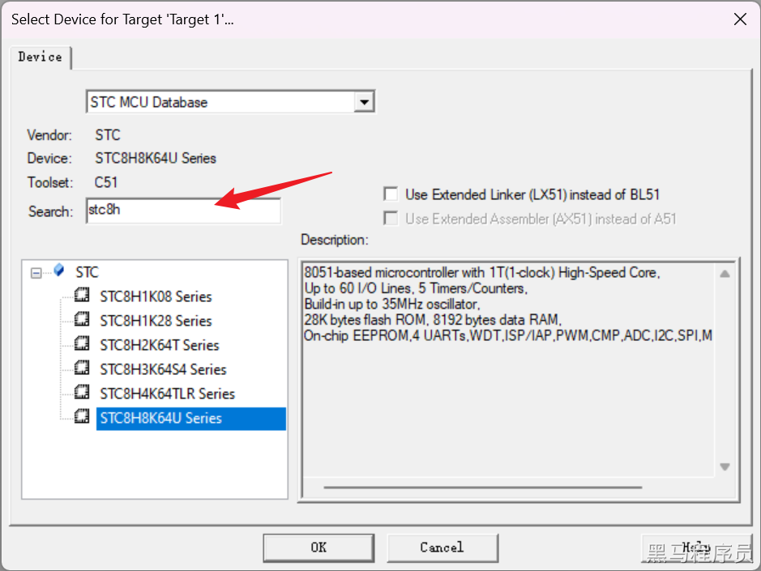</p><p data-lake-id="u1739b9d7" id="u1739b9d7" style="padding-left: 2em"><span data-lake-id="u6d889a43" id="u6d889a43">黑马程序员的stc芯片位STC8H系列下的8K64U型号，选择对应型号即可。如果以后采用的是其他型号，则选择其他型号</span></p><ol list="u215c572e" start="3"><li data-lake-id="u9b6b0d01" fid="u4d735461" id="u9b6b0d01"><span data-lake-id="u924913a4" id="u924913a4">取消汇编配置，新建完成项目</span></li></ol><p data-lake-id="u39df02c5" id="u39df02c5" style="padding-left: 2em">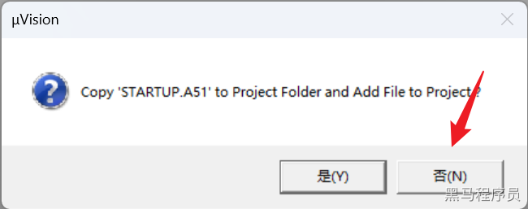</p><p data-lake-id="uf12f5194" id="uf12f5194"><br/></p><p data-lake-id="u0fda3f4d" id="u0fda3f4d"><span data-lake-id="u6ac2a7cb" id="u6ac2a7cb">项目新建完成后，目录结构如下：</span></p><p data-lake-id="ufe7a9bc6" id="ufe7a9bc6">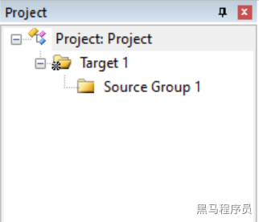</p><ul list="u24e684a3"><li data-lake-id="uc8aebce7" fid="u5e01c8e0" id="uc8aebce7"><span data-lake-id="uef840b4c" id="uef840b4c">Target 1为项目根节点</span></li><li data-lake-id="u520bb6f5" fid="u5e01c8e0" id="u520bb6f5"><span data-lake-id="ue3c1cc97" id="ue3c1cc97">Source Group1为源码目录</span></li><li data-lake-id="u6e589221" fid="u5e01c8e0" id="u6e589221"><span data-lake-id="u547688ad" id="u547688ad">可根据个人喜好来修改他们的名称</span></li></ul><h4 data-lake-id="Qrrmb" id="Qrrmb"><span data-lake-id="u0128defd" id="u0128defd">编码实现</span></h4><h5 data-lake-id="efgke" id="efgke"><span data-lake-id="u04d98b72" id="u04d98b72">结构准备</span></h5><p data-lake-id="u51740b83" id="u51740b83"><span data-lake-id="u77d5e782" id="u77d5e782">在源码目录，右键打开操作面板，选择</span><code data-lake-id="u14addde2" id="u14addde2"><span data-lake-id="u0eb199b3" id="u0eb199b3">Add New Item to Group ...</span></code><span data-lake-id="u64d70de6" id="u64d70de6">​</span></p><p data-lake-id="uca31348f" id="uca31348f">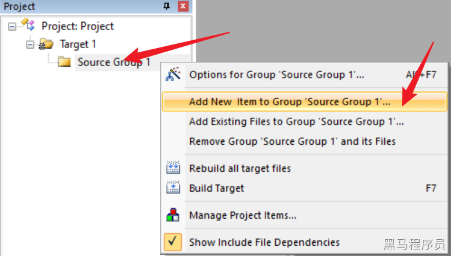</p><p data-lake-id="u17274928" id="u17274928"><span data-lake-id="u5f2a02b7" id="u5f2a02b7">新建main.c文件。根据面板提示，选择</span><code data-lake-id="u8d164b0a" id="u8d164b0a"><span data-lake-id="udc914c82" id="udc914c82">C File</span></code><span data-lake-id="u4239a33f" id="u4239a33f">,确定好文件名称，当前的文件名称为`main`。</span></p><p data-lake-id="u08ee508c" id="u08ee508c">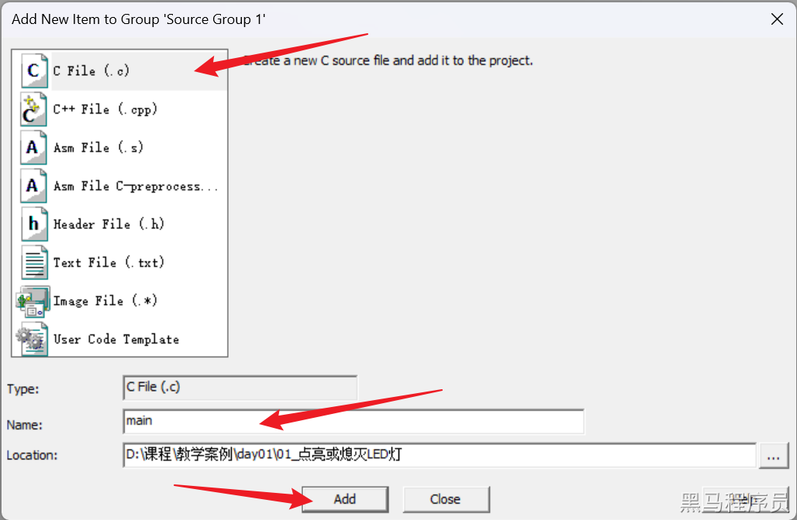</p><p data-lake-id="u89b3f98b" id="u89b3f98b"><code data-lake-id="ue25b7a6f" id="ue25b7a6f"><span data-lake-id="u8e09d7a3" id="u8e09d7a3">Add</span></code><span data-lake-id="u8ab3b3f8" id="u8ab3b3f8">完成后，在源码目录中会多一个 </span><code data-lake-id="u09b4969e" id="u09b4969e"><span data-lake-id="u992c0ac1" id="u992c0ac1">main.c</span></code><span data-lake-id="u0c2ba9fb" id="u0c2ba9fb">文件</span></p><p data-lake-id="ud377b854" id="ud377b854"><strong><span class="lake-fontsize-11" data-lake-id="ub35fa589" id="ub35fa589" style="color: var(--yq-text-primary)">代码实现</span></strong><span class="lake-fontsize-11" data-lake-id="ud040997b" id="ud040997b" style="color: var(--yq-text-primary)"><br>在 main.c中编写代码，实现main函数</br></span></p><span class="yuque-card-unsupported">[codeblock]</span><span class="yuque-card-unsupported">[codeblock]</span><p data-lake-id="u4446e39d" id="u4446e39d"><span class="lake-fontsize-11" data-lake-id="u25dfb16d" id="u25dfb16d" style="color: var(--yq-text-primary)"><br/></span><strong><span class="lake-fontsize-12" data-lake-id="u47856308" id="u47856308" style="color: var(--yq-text-primary)">编译烧录运行</span></strong><span class="lake-fontsize-12" data-lake-id="u55979612" id="u55979612" style="color: var(--yq-text-primary)"><br/></span><span class="lake-fontsize-11" data-lake-id="u1307433d" id="u1307433d" style="color: var(--yq-text-primary)">1如果没有配置编译输出，需要进行输出配置<br/><br/></span></p><p data-lake-id="u4f16259a" id="u4f16259a">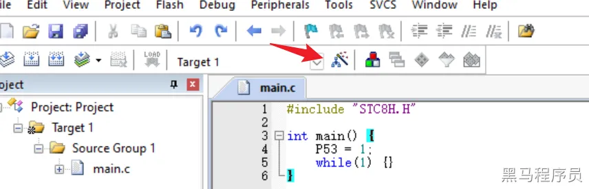</p><p data-lake-id="u67a96df8" id="u67a96df8"><span class="lake-fontsize-11" data-lake-id="ud71c6be0" id="ud71c6be0" style="color: var(--yq-text-primary)"><br/></span><span class="lake-fontsize-11" data-lake-id="u97cf8ae8" id="u97cf8ae8" style="color: var(--yq-text-primary)">在</span><span class="lake-fontsize-11" data-lake-id="ufe070c42" id="ufe070c42" style="color: var(--yq-text-primary)">Output</span><span class="lake-fontsize-11" data-lake-id="uaa9b8664" id="uaa9b8664" style="color: var(--yq-text-primary)">中 勾选 </span><span class="lake-fontsize-11" data-lake-id="ua1d4dd20" id="ua1d4dd20" style="color: var(--yq-text-primary)">Create HEX File</span><span class="lake-fontsize-11" data-lake-id="u54ca2704" id="u54ca2704" style="color: var(--yq-text-primary)"><br/><br/></span></p><p data-lake-id="uee1adb81" id="uee1adb81">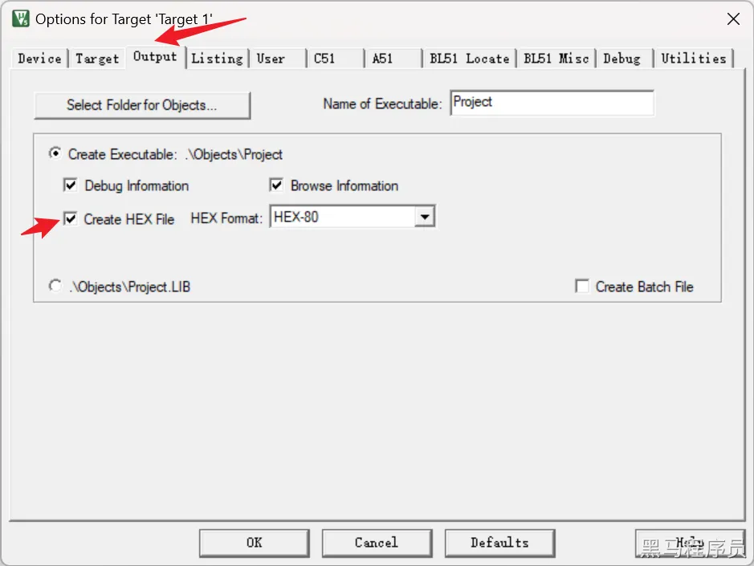</p><p data-lake-id="u39ce474f" id="u39ce474f"><span class="lake-fontsize-11" data-lake-id="uc567a0d6" id="uc567a0d6" style="color: var(--yq-text-primary)"><br/></span><span class="lake-fontsize-11" data-lake-id="u1dd770a5" id="u1dd770a5" style="color: var(--yq-text-primary)">2</span><span class="lake-fontsize-11" data-lake-id="u8329b21c" id="u8329b21c" style="color: var(--yq-text-primary)">保存与编译代码</span><span class="lake-fontsize-11" data-lake-id="u7ab53614" id="u7ab53614" style="color: var(--yq-text-primary)"><br/><br/></span></p><p data-lake-id="u0cb460e6" id="u0cb460e6">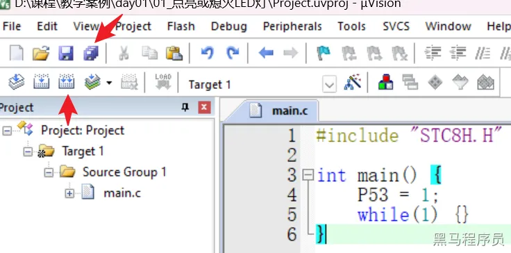</p><p data-lake-id="u042d075b" id="u042d075b"><span class="lake-fontsize-11" data-lake-id="u292a5c25" id="u292a5c25" style="color: var(--yq-text-primary)"><br/></span><span class="lake-fontsize-11" data-lake-id="u08452667" id="u08452667" style="color: var(--yq-text-primary)">编译完成后，来到项目创建的目录下的</span><span class="lake-fontsize-11" data-lake-id="u24a45fbf" id="u24a45fbf" style="color: var(--yq-text-primary)">Objects</span><span class="lake-fontsize-11" data-lake-id="u29f4aead" id="u29f4aead" style="color: var(--yq-text-primary)">目录中，会有一个以</span><span class="lake-fontsize-11" data-lake-id="u65384f3c" id="u65384f3c" style="color: var(--yq-text-primary)">.hex</span><span class="lake-fontsize-11" data-lake-id="ud7ec5dd4" id="ud7ec5dd4" style="color: var(--yq-text-primary)">结尾的二进制文件，这个文件就是编译的结果，也是需要进行烧录的二进制文件</span><span class="lake-fontsize-11" data-lake-id="ue2144360" id="ue2144360" style="color: var(--yq-text-primary)"><br/></span><span class="lake-fontsize-11" data-lake-id="u2e6789e6" id="u2e6789e6" style="color: var(--yq-text-primary)">3</span><span class="lake-fontsize-11" data-lake-id="ud4ad81de" id="ud4ad81de" style="color: var(--yq-text-primary)">烧录</span><span class="lake-fontsize-11" data-lake-id="uff6c459a" id="uff6c459a" style="color: var(--yq-text-primary)"><br/></span><span class="lake-fontsize-11" data-lake-id="u607b1bc2" id="u607b1bc2" style="color: var(--yq-text-primary)">打开 </span><span class="lake-fontsize-11" data-lake-id="ueec8b1a3" id="ueec8b1a3" style="color: var(--yq-text-primary)">STC-ISP</span><span class="lake-fontsize-11" data-lake-id="u2c38c4a3" id="u2c38c4a3" style="color: var(--yq-text-primary)">工具，对烧录进行配置</span><span class="lake-fontsize-11" data-lake-id="ub033bd2a" id="ub033bd2a" style="color: var(--yq-text-primary)"><br/><br/></span></p><p data-lake-id="u5e15efb0" id="u5e15efb0">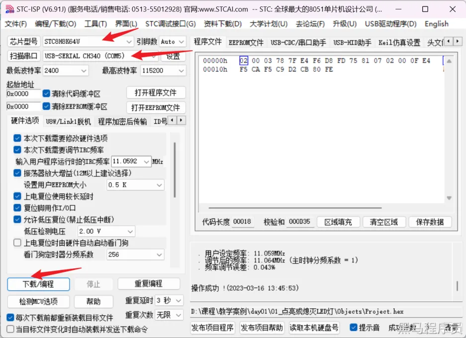</p><p data-lake-id="u461c8777" id="u461c8777"><span class="lake-fontsize-11" data-lake-id="u84ecc1a2" id="u84ecc1a2" style="color: var(--yq-text-primary)"><br/></span><span class="lake-fontsize-11" data-lake-id="ud71a9b53" id="ud71a9b53" style="color: var(--yq-text-primary)">○</span><span class="lake-fontsize-11" data-lake-id="ucb69c0be" id="ucb69c0be" style="color: var(--yq-text-primary)">芯片型号：根据当前开发板STC8型号进行确定，黑马程序员的STC8开发板采用的是</span><span class="lake-fontsize-11" data-lake-id="u9faa7d5c" id="u9faa7d5c" style="color: var(--yq-text-primary)">STC8H8K64U</span><span class="lake-fontsize-11" data-lake-id="ue5bbb9bd" id="ue5bbb9bd" style="color: var(--yq-text-primary)"><br/></span><span class="lake-fontsize-11" data-lake-id="u8455e079" id="u8455e079" style="color: var(--yq-text-primary)">○</span><span class="lake-fontsize-11" data-lake-id="u3f0c3e45" id="u3f0c3e45" style="color: var(--yq-text-primary)">串口：开发板和PC电脑通过USB进行连接后，会显示串口信息，选择对应的串口</span><span class="lake-fontsize-11" data-lake-id="u751e1e30" id="u751e1e30" style="color: var(--yq-text-primary)"><br/></span><span class="lake-fontsize-11" data-lake-id="uea5d1e11" id="uea5d1e11" style="color: var(--yq-text-primary)">点击</span><span class="lake-fontsize-11" data-lake-id="u75053466" id="u75053466" style="color: var(--yq-text-primary)">下载/编程</span><span class="lake-fontsize-11" data-lake-id="u32c5b177" id="u32c5b177" style="color: var(--yq-text-primary)">此时，烧录提示中显示 </span><span class="lake-fontsize-11" data-lake-id="u225b8c23" id="u225b8c23" style="color: var(--yq-text-primary)">正在检测单片机....</span><span class="lake-fontsize-11" data-lake-id="u3923b8e5" id="u3923b8e5" style="color: var(--yq-text-primary)"><br/><br/></span></p><p data-lake-id="u93f91970" id="u93f91970">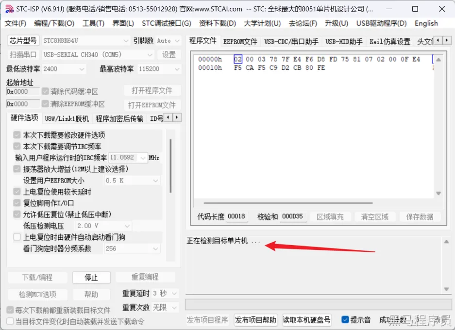</p><p data-lake-id="u98a6c961" id="u98a6c961"><span class="lake-fontsize-11" data-lake-id="ub6971a85" id="ub6971a85" style="color: var(--yq-text-primary)"><br/></span><span class="lake-fontsize-11" data-lake-id="u0c4b1b4f" id="u0c4b1b4f" style="color: var(--yq-text-primary)">此时需要</span><strong><span class="lake-fontsize-11" data-lake-id="u2e634eda" id="u2e634eda" style="color: var(--yq-text-primary)">点击开发板中的蓝色按钮</span></strong><span class="lake-fontsize-11" data-lake-id="u1e5f4013" id="u1e5f4013" style="color: var(--yq-text-primary)">，进行烧录。</span><span class="lake-fontsize-11" data-lake-id="ub820eba8" id="ub820eba8" style="color: var(--yq-text-primary)"><br/><br/></span></p><p data-lake-id="u8641e0e7" id="u8641e0e7" style="text-align: center"><span class="lake-fontsize-11" data-lake-id="u685883d8" id="u685883d8" style="color: var(--yq-text-caption)">若有收获，就点个赞吧</span></p><p data-lake-id="uc2faab09" id="uc2faab09"><span data-lake-id="u3d1bd514" id="u3d1bd514"><br/> </span></p>